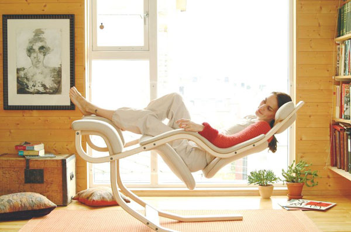
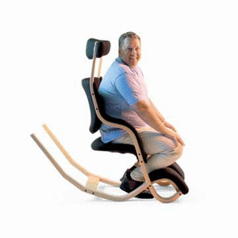
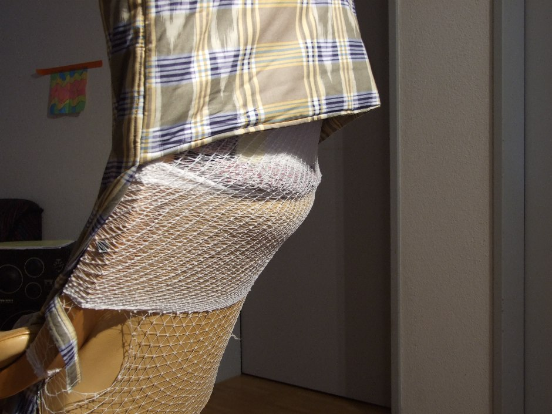
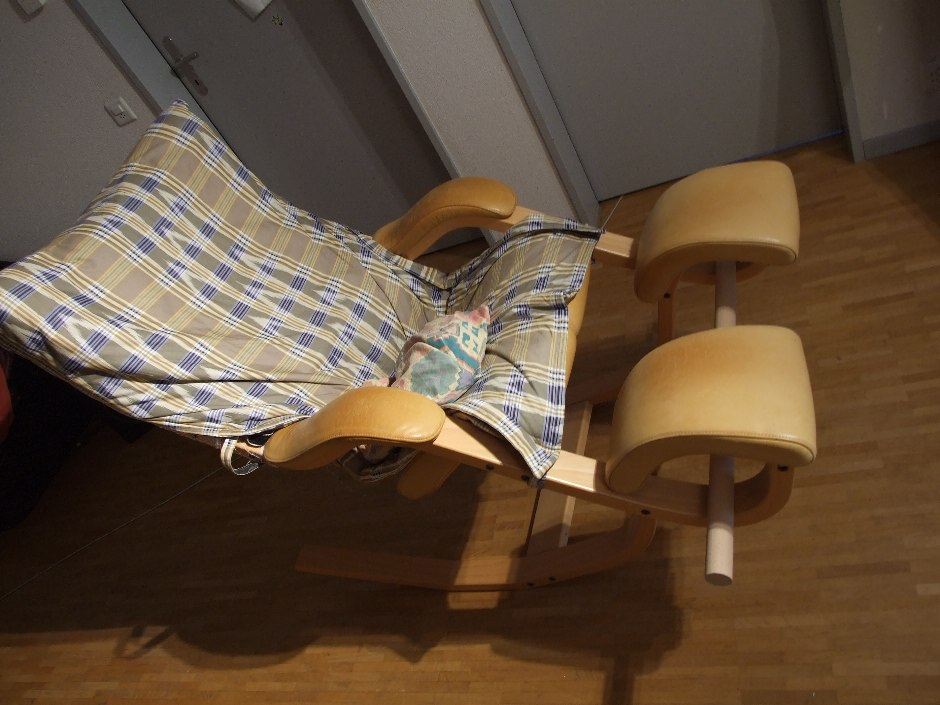

In October 2003 I got victim of an accident. A train crash happened in Zurich where I was sitting in the first wagon that crashed. By the vehemence of the collison, my backbone got hurt by vertebra compression fractures. Still today I suffer severe pains that completely define the way I have to live. This also impacts how and what I can work. Until now I was not able to work in a regular job due to the pains, but now I try to find something applicable, but there are restriction what I am able to do:
for example:
Especially long times sitting on chairs is painful and after a certain time I have to stand up and move. Otherwise it gets some kind of insufferable.
The daily way to work should be as short as possible. It would be efficient and helpful to do a main part of the work from my home-office and to carefully plan the times we meet together in team (eg. for design, analysis, code reviews, solution meetings for bugs, iterations-to-solution planning, testing). Whenever required, I also can stay for a couple of days at the working place (renting a cheap room or hotel) , either on a regular base (eg. for two or three days per week) or just when required.
I need to be able do relax in laying position somewhere in the office at any time between periods of work.
To lower the problem somewhat, I started to create on my own a "some kind of all position chairs" out of a Stokke-Gravitiy chair. The Stokke-Gravitiy itself is good for small people but for my size (1.80m) it needs some changes. For example I had to add more beddings.
In this chair I can work longer than on an ordinary chair and by the aid of pain-medicins I even can recover from minor pains (while in case of severe pains I need to lay freely on a bed).
Now I am in search of a project where I can work regularely in an R&D team and I hope for a company that will accept a person working in my circumstances.


additional beddings bring relief to one's back

a planned additional wooden stick will allow more positions for feet and legs, helpful in relieving tensions allover ones body

next I will try to create a table which can be used in all position of the chair as well as in standing position. This should be a metal construction, so it's time to use my tig welding machine once more.....